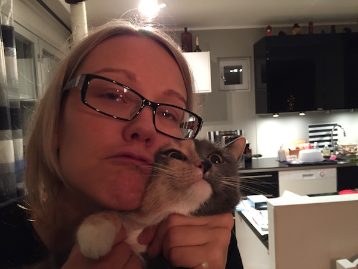
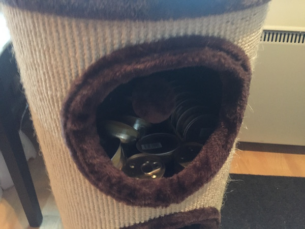

Kissojen vessat on rappusten yläpäässä kaapissa:
Kapealla ylähyllyllä on lapiot ja roskapussit. Pusseihin laitetaan kakat ja paakut ja sitten pussit voi laittaa vessan roskikseen.
Pääosa ruoasta pitäisi tulla automaatista. Märkäruokaa on kissojen puun ylemmässä kolossa:

Märkäruoan voi laittaa automaatin viereisen laatikon sisällä oleviin astioihin:

Märkäruokaa ei kannata laittaa enempää kuin yksi purkki puoliksi molemmille.
Vesikipot kannattaa myös täyttää. Yläkerran vessassa on myös vesiastia.